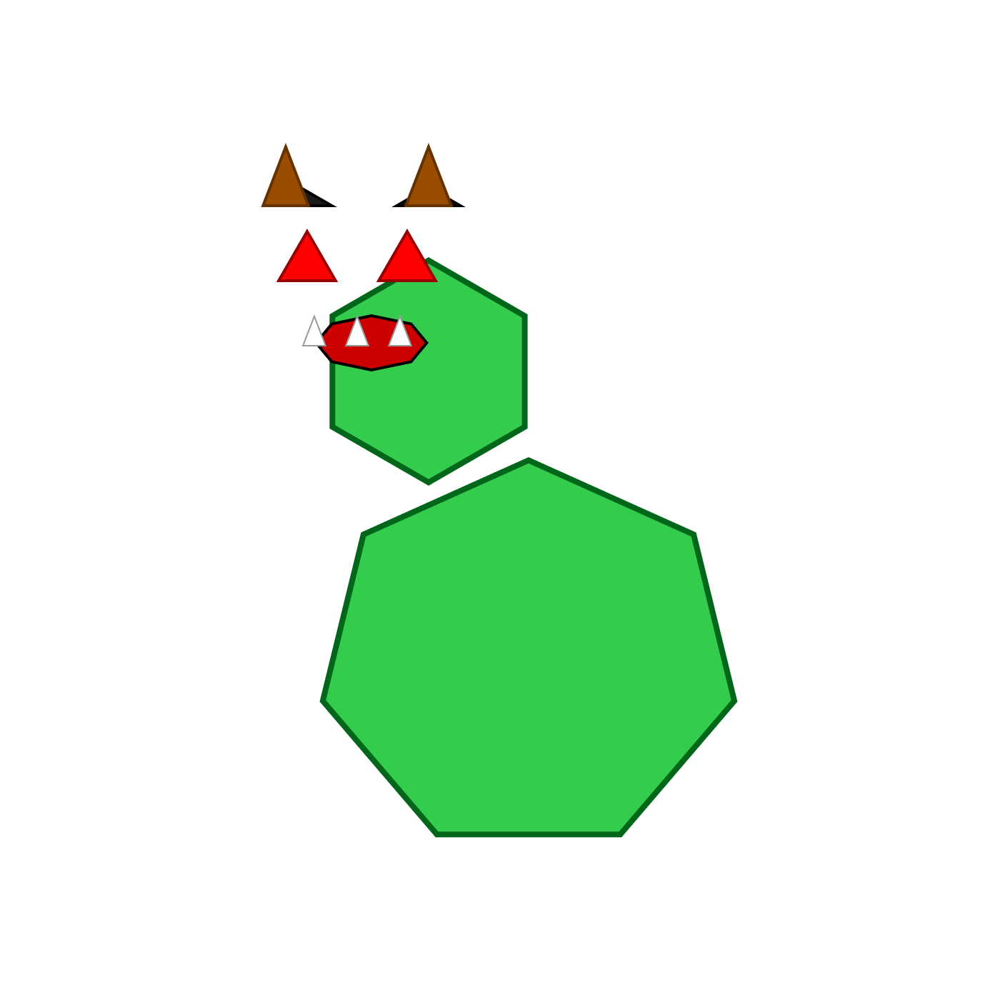

Quando trabalhava como designer gráfico, adorava usar ferramentas ou objetos de formas para as quais não foram originalmente concebidos. Por exemplo, fazer desenhos colorindo as células de uma folha de cálculo do Excel ou escrever um texto com fita isoladora amarela.
No outro dia, enquanto testava o MCP que desenvolvi para integrar o Figma com o Claude, a minha filha de 9 anos perguntou-me o que estava a fazer. Expliquei-lhe e ela ouviu com atenção. Quando terminei, ela disse:
—Diz-lhe para desenhar um monstro zangado.
Pedi ao Claude e ele desenhou um.

Tenho usado IA intensivamente no meu trabalho há já algum tempo e uma das coisas que percebi é que não devemos deixar de pedir algo só porque achamos que não o consegue fazer. Peça na mesma — verá como muitas vezes o surpreenderá com a solução proposta e aprenderá algo novo.
Hoje, a trabalhar com o Figma + Cursor, lembrei-me da minha filha e pedi-lhe ao agente que desenhasse um dragão.
Acho que vou voltar ao passatempo que tinha quando era designer 😊